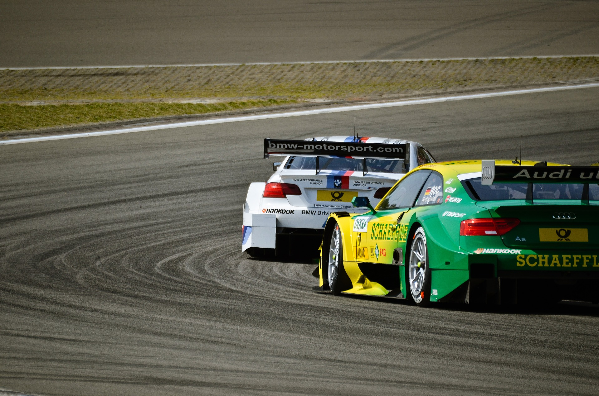
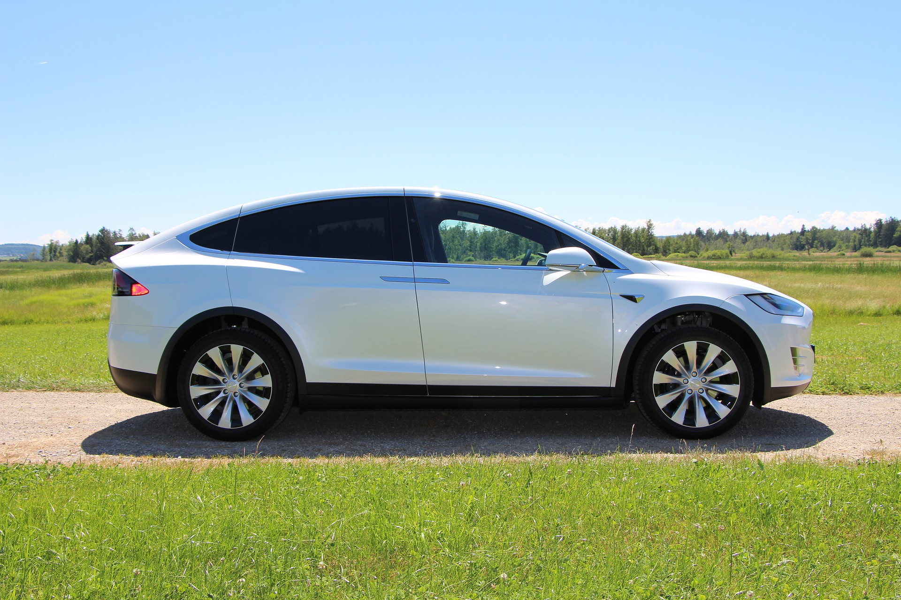

What You Should Know - Ozobot: Track Race
 Important Vocabulary
Important Vocabulary
- Work - when force is applied to move an object or load (example: you do work when you push your chair under your desk)
- Force - anything that changes the motion of an object (example: kicking a ball and pulling a suitcase)
- Load - another word for the object that is moved
- Source of Energy - the amount of work something could do
- Mechanical Parts - the physical pieces that make up the machine (example: motors, wheels, and gears)
- Electricity - an energy source
- Function - something is able to do what it was designed to do
- Software Programs - instructions written in code, which tell a computer or machine how to do its job
- Controller - the 'brain' and software programs are like the 'thoughts' in the 'brain' that tell the robot what to do
- Sensor - a sensor recognizes light, temperature, movement, or another signal
- Units of Measure - a quantity used to show the amount of something using length, volume, time, and weight (example: the length of a line can be measured in metric units such as meters, or standard units such as inches)
- Numerator - the value that represents the number of parts taken and located above the fraction line
- Denominator - the value represents the total parts a whole is divided into and located below the fraction line
- Distance - the length between two different points
- Interval - the distance between two different points
- Time Interval - the difference between the time an event starts and the time the event ends
- Speed - the measurement of distance over time to determine how fast something is moving
Machine vs Robot
A robot is a type of machine, but not all machines are robots.
The job of a machine is to make work easier. It does this by changing how force is used to move a load. A machine needs a source of energy to do work. With some machines, YOU may be that source of energy. Wind, the sun, and batteries are examples of other energy sources. Like automatic machines, robots are also programmed to do their jobs automatically. However, they are even more advanced because they have a controller programmed by software and sensors to adjust to new situations. With more advanced robots, you do not even have to adjust settings for these changes.


What Do Robots and Some Machines Have in Common?
Some jobs are too dangerous or boring for people. Machines or robots do these jobs best. Both machines and robots are made up of mechanical parts. However, some machines and ALL robots also use electricity (or other energy) to function and use software programs to tell them exactly what to do.
Industrial Robots- Industrial robots are used to move or help build things in manufacturing plants.

Sensors- The military uses robots with sensors to gather information. They also have Jeeps that drive themselves and robots that find, diffuse, and get rid of bombs.

Automatic Machines
Some advanced machines can do their jobs automatically because of the way they are programmed. Many can complete several different tasks in order. Once you adjust the settings and turn them on, automatic machines can do their work without your help.
Select each tab to learn more.
When you select your cycle, clothes washers go through several steps to wash your clothes: Soak, wash, rinse, and spin. Different settings change how fast the drum spins, the temperature of the water, and the length of the washing process.

You slide the fabric through, and the sewing machine binds the pieces together with thread. Different settings change the stitching.

This machine grinds the espresso beans, boils the water, foams, and pours.

You position the project and change the settings. The drill punches holes automatically.

What Are Robots?
Like automatic machines, robots are also programmed to do their jobs automatically. However, they are even more advanced because they have a controller programmed by software and sensors to adjust to new situations. With more advanced robots, you do not even have to adjust settings for these changes.
 |
 |
 |
Mars Rover- This robot roams around the planet Mars. It uses sensors to study the land in search of evidence of water. It needs to adapt to different planetary surfaces and conditions constantly.
Drying Machine- This dryer has temperature and moisture sensors. It stops when clothes are dry, even if you set the dryer for a longer cycle.
Robotic Arms- These robots are assembling a car.
Robot Checklist
A Robot is a machine with mechanical parts, software programs, an energy source, and sensors.
Mechanical parts are the physical pieces that make up the machine. Examples: motors, wheels, and gears.

Software programs are instructions written in code, which tell a computer or machine how to do its job. They are like the machine’s 'thoughts'.

An energy source supplies energy to the machine that does the work. If you use a bat to hit a ball, YOU are the energy source that helps the bat (machine) move the ball (load).
A sensor recognizes light, temperature, movement, or another signal. A sensor controls the robot’s reaction.

A controller is like the 'brain' of the robot. The software program is like the 'thoughts' in the 'brain' that tell the robot what to do.

How Do I Measure Speed?
The speed of an object is measured by the distance the object travels divided by the time it takes for the object to travel that distance.
The formula for speed is as follows:
s = d/t
where s = speed; d = distance; t = time
For example, for a ball that rolls 5 feet in 20 seconds, the speed of the ball is calculated as follows:
5 feet/20 seconds = 1 foot/4 seconds = 1/4 ft/s = 0.25 feet per second
When calculating the speed, the numerator represents the unit of measurement for distance, and the denominator represents the unit of time.
Career Connection and Real-World Application
Race Car Driver
A race car driver uses a vehicle to travel around a track as fast as possible to win a race. The race car driver must understand the car to use it to the driver’s advantage. An experienced race car driver knows when to change speeds and shift gears to improve performance.

A racecar driver has to understand the relationship between speed, distance, and time to be successful. A racetrack is always a set distance. If the driver knows the length of the track, the driver can then determine the speed needed to complete the track in a certain amount of time. For example, if the driver wants to complete one lap in two minutes, the driver could divide the distance by the desired time to determine the required speed.
To visualize this goal, the driver may have access to a smaller scale or scaled digital version of the track. The driver can then see the different curves that may affect the speed of the car. Knowing this in advance will help the driver compensate for any loss of speed in other track areas to win or finish in a certain amount of time.
Engineer of Self-Driving Cars
Like an Ozobot, self-driving cars rely on sensors to navigate with little to no human interaction. Engineers program self-driving cars to have the ability to identify street paths, directions, signage, speed, and other obstacles encountered while driving.
For a self-driving car to identify street paths, it must be programmed to understand the distance between points. For example, if a self-driving car wants to travel from street A to street D, it has to be programmed to know when to turn on streets B, C, and D. In this instance, measurements from the points on a map are programmed into the self-driving car.

Along with understanding distances, the self-driving car has to be programmed to understand speed as well. Different speed limits are set for different roads and highways. Therefore, the self-driving car has to be programmed to accelerate and decelerate when needed. As a result, the engineer needs to understand the relationship between speed, distance, and time to program the self-driving car correctly and safely.